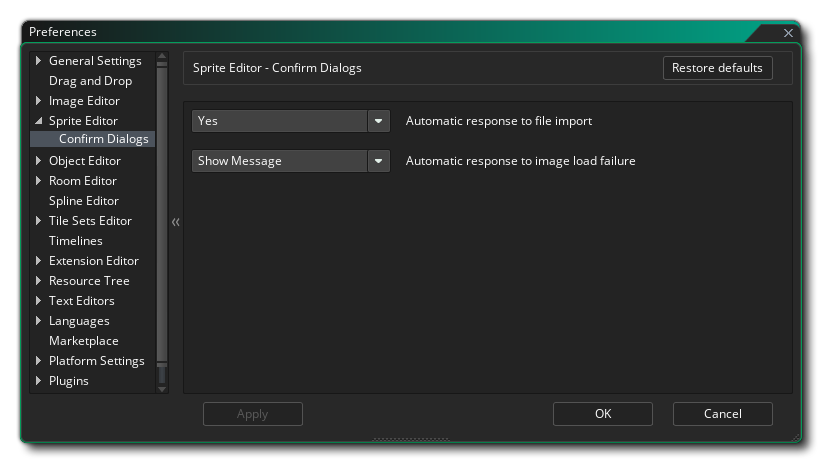

In den Voreinstellungen des Sprite-Editors wird festgelegt, wie der Sprite-Editor aussieht und wie er funktioniert. Die folgende Option besteht:
- Standard-Sprite-Ursprung: Mit dieser Option können Sie die Standardursprungsposition für alle neuen Sprite-Ressourcen festlegen, die Sie erstellen. Der Standardwert ist Oben links.
- Standardart der Sprite-Kollisionsmaske: Mit dieser Option können Sie die Standardart der Kollisionsmaske für neue Sprites festlegen. Zur Auswahl stehen ein Rechteck, ein gedrehtes Rechteck, eine Ellipse, eine Raute oder genau (pro Frame). Der Standardwert ist Rechteck.
- Standard-Sprite-Animationsmodus: Mit dieser Option können Sie den Standard-Animationsmodus für Sprites im Sprite-Editor festlegen. Sie können entweder "Frames pro Sekunde" oder "Frames pro Spielframe" auswählen, wobei die Standardeinstellung "Frames pro Sekunde" ist.
- Standard-Sprite-Breite: Mit dieser Option können Sie die Standardbreite für alle neuen Sprites festlegen, die im Sprite-Editor erstellt wurden. Der Standardwert ist 64.
- Standard-Sprite-Höhe: Mit dieser Option können Sie die Standardhöhe für alle neuen Sprites festlegen, die im Sprite-Editor erstellt wurden. Der Standardwert ist 64.
Die folgende Unterkategorie existiert auch für den Sprite-Editor:
Die hier verfügbaren Optionen steuern die Meldungen, die angezeigt werden, wenn eine Aktion bestätigt werden muss. Sie können diese Einstellung ändern, um die Nachricht immer anzuzeigen oder mit einer bestimmten Aktion (entweder Ja oder Nein) abzubrechen:
- Automatische Antwort auf den Dateiimport: Wenn Sie ein neues Bild importieren, das bereits vorhanden ist, werden Sie standardmäßig aufgefordert, den Import fortzusetzen und das vorhandene Bild zu überschreiben oder den Vorgang abzubrechen. Mit dieser Option können Sie diese Meldung unterdrücken und den Import entweder durch Auswahl von "Nein" abbrechen oder das aktuelle Sprite mit "Ja" überschreiben. Der Standardwert ist "Show Message".
- Automatische Reaktion auf das Laden eines Images: Wenn Sie ein neues Image importieren und der Import fehlschlägt, wird standardmäßig eine Warnmeldung angezeigt, die Sie über einen Fehler informiert. Mit dieser Option können Sie diese Meldung unterdrücken, indem Sie "Okay" auswählen. Der Standardwert ist "Show Message".